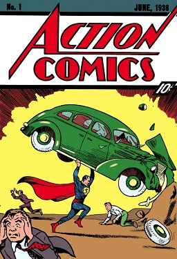
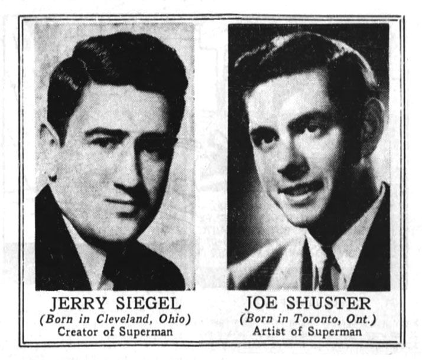
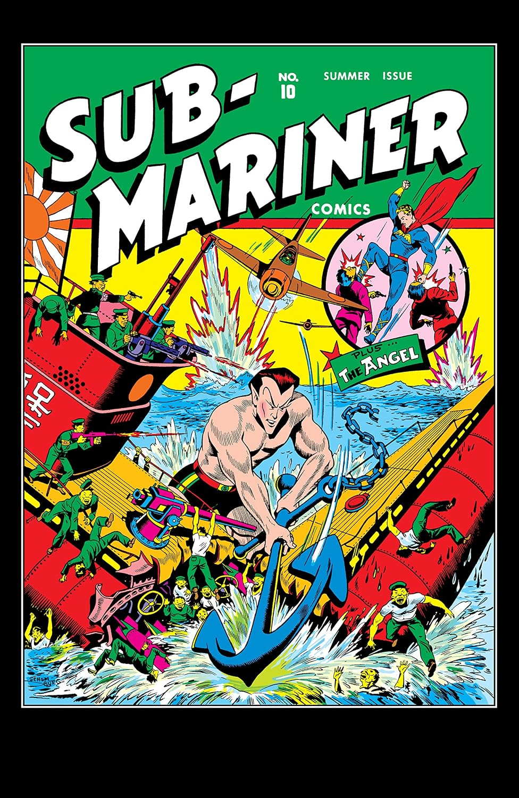
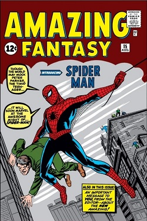
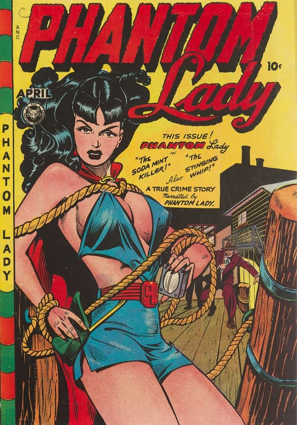

Historical Supply Attrition, Third-Party Assaying, and the Empirical Foundations of the Comic Book Market
Scope: Seven Platform Supply Regimes (1900 Golden Age through Post-Modern Era) |
Typography: Hind 300 & STIX Two Math
I. Arriving Late to Cinderella’s Ball: High Art, Mechanical Reproduction, and the $15 Million Sale

Didactic Panel • Figure Plate 0.1Action Comics #1 (National Allied, June 1938)Provenance: Cover by Joe Shuster; lead story by Jerry Siegel. Newsstand price: $0.10. Record sale: $15,000,000 for a CGC 9.0 copy (reported January 9, 2026).1Composition: Shuster’s diagonal framing—Superman hoisting a green 1937 sedan overhead—broke static pulp conventions on Depression-era newsstands.Census Record: From a ~200,000 print run on groundwood pulp, the CGC Population Report records only 45 Universal (unrestored) copies and 87 total graded copies across all label categories (45 Universal, 2 Qualified, 6 Conserved, 34 Restored).1, 17
Most people arrive at the story of investment-grade comic books the way a guest arrives late to Cinderella’s ball: you walk through the doors just in time to hear that a single CGC 9.0 copy of Action Comics #1 sold privately for fifteen million dollars in January 2026, you recall that it cost ten cents on a corner newsstand in 1938, and you have no economic framework for how sixty-four pages of stapled wood-pulp newsprint outsold nineteenth- and twentieth-century canvases by Édouard Manet (1832–1883), Claude Monet (1840–1926), and Marc Chagall (1887–1985)—or even Old Master paintings created four hundred years earlier.1
If that price bothers you, it ought to. A Monet water lily canvas was painted by an Impressionist master who spent decades studying how light refracts across water at Giverny. An oil painting by Manet or Chagall is a singular physical object hanging in a climate-controlled gallery. In his 1935 essay "The Work of Art in the Age of Mechanical Reproduction," the German cultural critic Walter Benjamin—writing alongside Frankfurt School theorists Theodor Adorno and Max Horkheimer—argued that industrial printing presses and photography strip an artwork of its "aura"—its unique presence in time and space.1, 2 Because a rotary press can print two hundred thousand identical copies of a magazine in a few days, Benjamin concluded that mechanical reproduction removes the physical scarcity on which traditional art valuation rests.
Three decades after Benjamin and Adorno critiqued the "Culture Industry," postwar Pop and Street artists tested that premise directly. In his Manhattan studio ("The Factory"), Andy Warhol silk-screened Campbell’s soup cans, Brillo boxes, and portraits of Marilyn Monroe onto gallery linen.3 Roy Lichtenstein projected panels from romance and war comic books onto large canvases and hand-painted the Ben-Day printing dots used by commercial photoengravers. Later, Peter Max brought commercial lithography into mass-market poster art, while the British street artist Banksy built a mechanical shredder inside a gold frame at Sotheby’s in 2018 to slice his own canvas the moment the auctioneer’s gavel fell.3 Yet many works by Monet, Manet, Chagall, Warhol, and Lichtenstein clear at Sotheby’s and Christie’s each season for less than a high-grade 1938 copy of Action Comics #1—a periodical rolled into back pockets, traded on schoolyard concrete, and thrown out by parents cleaning closets.
How does a ten-cent periodical outprice a Monet? The driver of collectible value is not the medium alone; it is severe physical attrition combined with enduring cultural demand. When wartime paper drives, acidic paper decay, and ordinary household disposal remove more than 99.9 percent of an original Golden Age print run, the surviving fraction ceases to trade like a mass-produced magazine and begins to trade like a scarce historical artifact. For decades, that transition went unmeasured by financial economists. Commentators borrowed trading-floor terms—blue chip, float, liquidity, market cap—without building the supply equations or historical datasets needed to test them. You cannot explain why Action Comics #1 clears fifteen million dollars by looking at a price chart alone, any more than you can explain the price of gold without understanding how much ore remains in the ground and how much bullion sits in vaults.
II. 1938 Cleveland: Two Teenagers, the Übermensch, and Wartime Supply Attrition

Didactic Panel • Figure Plate 0.2Jerry Siegel & Joe Shuster (Cleveland, ca. 1938)Provenance: Archival studio portraits of writer Jerry Siegel (left) and artist Joe Shuster (right) in Glenville, Cleveland.Historical Context: Two high-school friends in Cleveland’s Jewish community inverted Nazi propaganda of the Übermensch into a democratic defender of the weak.Contractual Record: On March 1, 1938, Siegel and Shuster signed a $130 release check ($10/page) transferring all rights in Superman to Detective Comics, Inc.5
To understand where demand for American comic books originated—and why their creators owned none of the resulting equity—you must travel to Glenville, a working-class Jewish neighborhood in Cleveland, Ohio, during the Great Depression. There, two Glenville High School students—writer Jerry Siegel, the son of Lithuanian Jewish immigrants, and artist Joe Shuster, who sketched on wrapping paper and discarded wallpaper scraps—watched European fascism rise in the 1930s.4, 5
Following the February 1933 Reichstag fire in Berlin and Adolf Hitler’s consolidation of power, Nazi propaganda appropriated nineteenth-century philosopher Friedrich Nietzsche’s concept of the Übermensch ("Overman" or "Superman"), recasting it as an ideal of Aryan racial dominance.6 Working at a Cleveland drafting board, Siegel and Shuster inverted that idea. After experimenting in January 1933 with a mimeographed pulp villain story titled "The Reign of the Superman," they reinvented the character for Action Comics #1 (June 1938) as Kal-El—an infant refugee from a destroyed planet, raised by Kansas farmers, who used superhuman strength to defend ordinary people: stopping domestic abusers, rescuing trapped coal miners, and exposing corrupt Washington lobbyists.4, 6 In Action Comics #1, Siegel and Shuster introduced him as "champion of the oppressed, the physical marvel who had sworn to devote his existence to helping those in need"—a populist mission that the 1942 Adventures of Superman radio series later distilled into the famous wartime catchphrase, "truth, justice, and the American way."6
As global conflict escalated between 1939 and 1941, American public opinion remained strongly isolationist: when the ocean liner MS St. Louis sought refuge off Florida in May–June 1939 carrying 937 mostly Jewish refugees from Nazi Germany, it was turned back to Europe, and Gallup polls through November 1941 showed roughly 80 to 85 percent of Americans opposed entering the European war.4, 7 Yet New York’s comic book creators took an explicit interventionist stance months before the United States entered World War II.
Didactic Panel • Figure Plate 0.3Captain America Comics #1 (Timely, March 1941)Provenance: Cover and interior art by Jack Kirby and Joe Simon; published by Martin Goodman’s Timely Comics (on newsstands December 20, 1940).Composition: Kirby’s foreshortened framing propels Captain America across the cover, delivering a right cross to Adolf Hitler’s jaw as gunfire sparks off his shield.Market Context: Published nine months before Pearl Harbor; a primary WWII historical key clearing >$3,000,000 in high grade.
In March 1941—placed on newsstands December 20, 1940, nearly nine months before the attack on Pearl Harbor on December 7, 1941—two Jewish creators from New York, Joe Simon and Jack Kirby (born Jacob Kurtzberg on Manhattan’s Lower East Side), published Captain America Comics #1 for Martin Goodman’s Timely Comics, depicting Captain America punching Adolf Hitler on the jaw.4, 5 After isolationists and German-American Bund sympathizers threatened Timely’s 42nd Street offices, New York Mayor Fiorello La Guardia personally telephoned Joe Simon to provide police protection.5
Even earlier, in Bill Everett’s Sub-Mariner feature—debuting in Marvel Comics #1 (October 1939) and spinning off into Sub-Mariner Comics in Spring 1941—Prince Namor of Atlantis battled Axis submarines in the North Atlantic and Japanese naval forces in the Pacific.8 Throughout the war years, the visual identity of Timely, Pines, and Fiction House was shaped by Puerto Rican-born master illustrator Alex Schomburg, whose detailed airbrush-and-line covers depicted Allied forces and costumed heroes confronting Axis tyranny across Europe and the Pacific.

Didactic Panel • Figure Plate 0.4Sub-Mariner Comics #10 (Timely, Summer 1943)Provenance: Character created by Bill Everett (1939); wartime cover art signed by Puerto Rican-born master illustrator Alex Schomburg.Composition: Schomburg’s wartime tableau depicts Prince Namor smashing an Imperial Japanese warship amid depth-charge explosions.Supply Impact: WWII paper salvage drives and overseas GI distribution reduced surviving populations of Golden Age issues to roughly 0.1% of initial print runs.
That wartime mobilization directly engineered the supply scarcity of Golden Age comics. While Alex Schomburg’s covers were selling hundreds of thousands of copies per month on newsstands and military bases, the U.S. War Production Board organized nationwide scrap-paper drives in which schoolchildren collected wagons full of read comic books and newspapers to be pulped into ammunition packaging and supply cartons.4, 15 Millions more copies shipped in GI ration kits to Europe and the Pacific were read until they fell apart in barracks and foxholes.
By August 1945—when the atomic bombings of Hiroshima and Nagasaki ended World War II—the United States had emerged as a global superpower, and its newsstand heroes had become an enduring popular mythology. Ancient Greece had Mount Olympus; Rome had the Pantheon; Norse storytellers had Valhalla. Industrial America built its modern popular pantheon—its Valhalla of American Gods—out of ten-cent newsprint and wire staples, while wartime paper drives and chemical decay reduced surviving Golden Age populations to roughly one copy in a thousand (0.1%).
Excursus I • Why Golden Age Survival Is 0.1%, Not 2%: Evidence from the Action Comics #1 Census
Early collectibles commentary often guessed that roughly 1 to 2 percent of Golden Age print runs survived. Our empirical audit of the Panel Profits database demonstrated that a 2 percent assumption overstates actual Golden Age survival by roughly fortyfold. Consider Action Comics #1 (June 1938): out of an estimated print run of P = 200,000 copies, a 2 percent survival rate would imply 4,000 surviving copies today. Yet despite an eighty-eight-year global treasure hunt and multimillion-dollar bounties, the official CGC Population Report records only 45 Universal (unrestored) copies and 87 total graded copies across all label categories combined (45 Universal, 2 Qualified, 6 Conserved, and 34 Restored, excluding 54 single pages [PG] and 3 detached covers [CVR])—with fewer than 200 copies estimated to exist across all graded and ungraded states (~0.04% to 0.1% survival).17
Why was Golden Age attrition so severe? Before collector bags, price guides, or specialty shops existed, newsstand distributors stripped the covers off unsold copies for pulp credit, wartime "Paper Trooper" school drives pulped millions of read issues for the war effort, and overseas GI copies were consumed in the field. Accordingly, the Panel Profits supply engine models Golden Age (1900–1945) baseline survival at 0.1 percent (rera = 0.001) and Atomic Age (1946–1955) survival at 1.0 percent (rera = 0.01), matching observed census reality rather than folk estimates.
III. Cold-Water Flats, the Manhattan Bullpen, and the Forgotten Architects
Didactic Panel • Figure Plate 0.5Stan Lee, Jack "King" Kirby, & Steve DitkoProvenance: Archival photographs of editor-writer Stan Lee (left), Jack Kirby (top right), and Steve Ditko at his Manhattan drafting table beneath an IBM "THINK" sign (bottom right).Historical Synthesis: Working via the "Marvel Method" (1961–1966), Kirby and Ditko plotted and pencilled the core Silver Age Marvel catalog on freelance page rates without character equity.
Step inside a New York City comic book studio in the late 1930s or early 1940s and you would not find a corporate suite. You would find a fourth-floor walk-up or cold-water flat in Midtown Manhattan where a penciller, an inker, a letterer, a colorist, and an editor sat around the same wooden table, producing sixty-four-page monthly books on tight deadlines to pay Friday’s rent.5 In early comic "packaging shops"—such as Will Eisner and Jerry Iger’s Studio on East 41st Street, Harry "A" Chesler’s workshop on West 23rd Street, or Lloyd Jacquet’s Funnies, Inc.—young artists worked long shifts in cramped rooms, stacking wet India-ink Bristol boards near radiators to dry. Many were first- and second-generation Jewish, Italian, Slavic, Puerto Rican, and African American illustrators excluded from uptown Madison Avenue advertising agencies and slick magazines. In the comic bullpens, formal credentials mattered less than output: if a penciller could deliver four strong pages before dinner, he was paid on the spot.
Out of those Manhattan bullpens emerged the foundational architects of American sequential art: Jack "King" Kirby, Steve Ditko, Will Eisner, Bill Finger, Alex Schomburg, and Matt Baker.5, 9, 10 Working for flat page rates rather than long-term intellectual-property royalties, they built the visual and narrative foundations of modern entertainment.
The divergence between creative authorship and legal ownership was established in Detective Comics #27 (May 1939) with the debut of Batman. When National Allied Publications editor Vin Sullivan asked cartoonist Bob Kane for a new hero to follow Superman, Kane sketched a character in a red suit with a small domino mask and rigid bat-wings, and brought the concept to a twenty-five-year-old Bronx writer named Bill Finger.9 As documented by biographer Marc Tyler Nobleman and historian Gerard Jones, it was Bill Finger who proposed the dark pointed-ear cowl, the scalloped cape, the gloves, the gray-and-black color scheme, the detective persona, the name "Gotham City," and Bruce Wayne’s origin, while scripting the debut story, "The Case of the Chemical Syndicate."5, 9 Yet Bob Kane alone signed the publishing contract with National—securing a mandatory sole byline and financial participation while employing Finger as an uncredited writer. Finger co-created the Joker, Catwoman, the Penguin, the Riddler, Robin, the Batmobile, and the Batcave before dying in Manhattan in 1974; DC Entertainment formally restored his co-creator credit ("Batman created by Bob Kane with Bill Finger") in September 2015.9

Didactic Panel • Figure Plate 0.6Amazing Fantasy #15 (Marvel, August 1962)Provenance: Cover pencilled by Jack Kirby and inked by Steve Ditko; interior 11-page origin story drawn by Ditko and scripted by Stan Lee. Cover price: $0.12.Composition: Ditko’s angular figure work—Spider-Man swinging above the city skyline—introduced urban verticality and teenage vulnerability.Market Role: First appearance of Spider-Man; the premier Silver Age benchmark issue, with a CGC 9.6 copy clearing $3,600,000 at Heritage Auctions (2021).18
That same work-for-hire structure governed Timely Comics, founded in 1939 by pulp publisher Martin Goodman, who appointed his young relative Stanley Lieber (writing under the pen name Stan Lee) as interim editor in late 1941.5 Two decades later, between 1961 and 1966, Stan Lee, Jack Kirby, and Steve Ditko transformed Goodman’s company (rebranded Marvel Comics) into the creative engine of the Silver Age, introducing the Fantastic Four, Spider-Man, the Incredible Hulk, Thor, Iron Man, Ant-Man, the X-Men, the Avengers, Daredevil, Doctor Strange, the Silver Surfer, Galactus, and the Black Panther.
When Goodman allowed Lee and Steve Ditko to place a new teenage character named Spider-Man into the final issue of a slated-for-cancellation anthology—Amazing Fantasy #15 (August 1962)—Ditko and Lee broke the established superhero mold.4, 5 Working at his Manhattan drafting table (Figure Plate 0.5), Ditko rendered Peter Parker not as an invincible adult, but as a nearsighted, working-class Queens high-school student who worried about his Aunt May’s rent bills, medicine, and social rejection. When newsstand distributor sales reports for Amazing Fantasy #15 came back months later showing it was one of Marvel’s best-selling issues of the year, Goodman immediately greenlit The Amazing Spider-Man #1 (March 1963). Under the "Marvel Method," Kirby and Ditko routinely plotted visual storylines from brief editorial discussions before Lee added dialogue; however, escalating disputes over plotting credit, royalty participation, and the return of original art boards led Ditko to leave Marvel in 1966 and Kirby to depart for DC Comics in 1970.5

Didactic Panel • Figure Plate 0.7Phantom Lady #17 (Fox Feature, April 1948)Provenance: Cover art by pioneering African American draftsman Clarence Matthew "Matt" Baker (1921–1959).10Composition: Trained at Cooper Union, Baker combined academic figure drawing, fluid brush inking, and dramatic chiaroscuro lighting.Census Scarcity: Targeted in Dr. Fredric Wertham’s Seduction of the Innocent (1954), only 133 total graded copies appear on the CGC census across all grades, driving six-figure auction sales.17, 18
Understanding the Manhattan bullpens—and the supply scarcity of Golden and Atomic Age non-superhero keys—also requires examining creators who succeeded despite mid-century racial and gender barriers. Born in North Carolina in 1921, Clarence Matthew "Matt" Baker studied illustration at New York’s Cooper Union before presenting his portfolio to Jerry Iger in 1944.10 Hired immediately, Baker became one of the most sought-after pencillers and cover artists of the 1940s and 1950s across Fiction House, Fox Feature Syndicate, Quality Comics, St. John Publications, and Atlas/Marvel.10
As documented by comic historian Ken Quattro in Invisible Men: The Trailblazing Black Artists of Comic Books (2020), Baker drew the first known Black comic book hero illustrated by a Black artist—Voodah in Crown Comics #3 (Golfing/McCombs Publications, Fall 1945)—crafted the iconic cover for Phantom Lady #17 (Fox Feature Syndicate, April 1948), defined the look of Sky Girl, Canteen Kate, and St. John’s romance line, and illustrated It Rhymes with Lust (St. John Publications, 1950, written by Arnold Drake and Leslie Waller), a 128-page digest-sized noir drama recognized by historians as a precursor to the modern American graphic novel.10
Baker’s career shows why publisher history shapes surviving supply. Independent houses such as Fiction House and St. John Publications gave illustrators like Matt Baker, Lily Renée, and Joe Kubert latitude to produce painted covers, romance stories, and psychological noir. Because these smaller publishers lacked the capital reserves and licensing income of National/DC or Dell when the 1954–1955 censorship crisis hit, many folded and their pre-Code backstock vanished—making surviving high-grade copies of Baker’s covers exceptionally scarce in the CGC census (only 133 total graded copies of Phantom Lady #17 exist in the platform’s CGC census registry today, with only 3 copies graded 9.0 or higher).10, 17
Didactic Panel • Figure Plate 0.830 Days of Night #1 (IDW, August 2002)Provenance: Written by Steve Niles; painted cover and interior art by Ben Templesmith. Published by IDW Publishing.Composition: Templesmith’s expressionistic mixed-media palette—crimson lettering over a stark Alaskan snowscape—departed completely from superhero house styles.Supply Dynamics: Initial direct-market orders of ~3,000 copies created genuine modern print-run scarcity prior to its Columbia Pictures film adaptation.12, 15
A decade after the founding of Image Comics, independent publishing demonstrated how low initial print runs in the direct market could create genuine modern scarcity. In August 2002, San Diego publisher IDW Publishing released 30 Days of Night #1 by writer Steve Niles and artist Ben Templesmith.12 Centered on vampires attacking Barrow, Alaska, during thirty days of polar winter darkness, the issue received initial direct-market retail orders of roughly 3,000 copies. Strong reader demand and a subsequent film acquisition by Sam Raimi’s Ghost House Pictures and Columbia Pictures drove rapid secondary-market appreciation—illustrating that post-2000 scarcity is driven by small initial print orders or tiered incentive ratios rather than paper decay.12, 15
Globally, sequential art evolved along distinct publishing and preservation paths. In Japan, writer-director Katsuhiro Otomo serialized his cyberpunk epic Akira from 1982 to 1990, whose 1988 English publication by Marvel’s Epic Comics imprint (featuring computer color separations by Steve Oliff) expanded Western readership for Japanese manga.13 In Europe, the Franco-Belgian bande dessinée tradition—led by Hergé (The Adventures of Tintin, 1929) and René Goscinny and Albert Uderzo (Asterix, 1959)—published works in durable hardcover albums designed for permanent bookshelf retention, contrasting sharply with disposable American newsstand periodicals.14
IV. Historical Supply Regimes and the Platform Survival Model
Why does this publishing history matter to a financial economist? Because each era’s manufacturing chemistry, distribution contract, and archival record—from returnable newsstand consignment in 1938 and the 1960 postal circulation rule to non-returnable direct-market comic shops in the 1970s, Diamond’s monthly Top-300 charts in 1996, and post-2020 multi-distributor data—leaves behind a different supply footprint.15 Modeling a 1938 Golden Age issue requires different supply assumptions than modeling a 1988 Copper Age issue or a 2022 incentive variant. History drives the supply math.
Consider the physical chemistry of vintage newsprint. Periodicals printed between the 1930s and the 1970s used mechanical groundwood pulp containing unbleached lignin. Over decades of exposure to oxygen, humidity, and ultraviolet light, lignin oxidizes into organic acids that break down cellulose fibers until cream pages turn yellow, tan, and eventually brittle—a progression recorded on third-party grading labels via the Page Quality scale (White, Off-White to White, Off-White, Cream to Off-White, Tan, Brittle). Combined with childhood handling, newsstand stripping of unsold covers, and household disposal, physical attrition increases steeply with age.
To estimate surviving supply across comic history in alignment with observed census data, the Panel Profits platform partitions the catalog into seven computational supply regimes (while historians sometimes further subdivide pre-1938 precursors as the Platinum Age and post-2012 releases as the Contemporary Era): Golden Age (1900–1945, rera = 0.001, or 0.1%), Atomic Age (1946–1955, rera = 0.01, or 1.0%), Silver Age (1956–1969, rera = 0.08, or 8%), Bronze Age (1970–1983, rera = 0.15, or 15%), Copper Age (1984–1991, rera = 0.25, or 25%), Modern Age (1992–1999, rera = 0.45, or 45%), and Post-Modern Era (2000–Present, rera = 0.70, or 70%). From the Silver Age (1956) onward, the platform also enforces a 20 percent census-to-survivor cap (C ≤ 0.20 · S, or S ≥ 5 · C). The case of Amazing Spider-Man #300 (May 1988) illustrates why: its CGC census is 41,679 slabs against a documented print run of 451,930 copies (about 9.2% of the print run), which came to 61 percent of the old survivor estimate—leaving too few ungraded survivors to be plausible. By contrast, the 5 × C floor is deliberately not applied to pre-1956 Golden or Atomic issues, where almost every known copy of a major grail has already been slabbed (for Action Comics #1, total CGC census across all label categories is 87 copies, so 5 × C would imply 435 survivors against fewer than 200 actually known to exist).17
S = min( P, max( C, P · rera ) ) [pre-1956]
•
S = min( P, max( 5 · C, P · rera ) ) [1956+]
Equation 0.1 — Platform Piecewise Surviving-Copies Model (Variable Key):
• Pre-1956 Branch (Golden 1900–1945 & Atomic 1946–1955): Surviving copies S equal the larger of certified census (C) or print run times the era survival rate (P · rera), capped at the original print run (P).
• 1956+ Branch (Silver through Post-Modern) & the 20% Rule: From 1956 onward, CGC census (C) cannot exceed 20% of total surviving copies (S ≥ 5 · C), so S equals the larger of 5 · C or P · rera, capped at P.
• P (Documented Print Run / Net Paid Circulation): Derived from the 1960 postal rule filings (Comichron), publisher ledgers, or distributor records. Where P is unknown, P remains blank (never fabricated).
• rera (Platform Era Survival Rate): Golden (1900–1945) = 0.1% (0.001); Atomic (1946–1955) = 1.0% (0.01); Silver (1956–1969) = 8% (0.08); Bronze (1970–1983) = 15% (0.15); Copper (1984–1991) = 25% (0.25); Modern (1992–1999) = 45% (0.45); Post-Modern (2000–Present) = 70% (0.70).
V. Third-Party Certification, Information Asymmetry, and Custody Partitioning
For the first sixty years of comic book trading, buyers and sellers faced severe information asymmetry—the market failure analyzed by Nobel laureate George Akerlof in his 1970 paper "The Market for 'Lemons'".16 When a collector purchased an ungraded 1963 copy of Amazing Spider-Man #1 sight-unseen through a mail-order ad in The Buyer’s Guide for Comic Fandom, the buyer had to trust the seller’s condition description prior to payment. Was an advertised "Mint" copy actually a creased 6.0 Fine? Had a dealer shaved a ragged edge on a paper cutter ("trimming"), filled a missing corner with wood fiber ("piece-fill"), glued a spine split, or applied black ink to cover creases ("color touch")?
Under unverified mail-order trading, that asymmetry produced a classic pooling equilibrium: because distant buyers could not distinguish untouched unrestored copies from doctored "lemons" without forensic inspection, rational buyers discounted their bids across the board.16 Owners of genuinely pristine copies frequently withheld them from remote trade, while overstated grading descriptions proliferated.
In January 2000, the Certified Guaranty Company (CGC) substantially reduced—though did not completely eliminate—that information asymmetry.17 By inspecting submissions under magnification and ultraviolet light to detect restoration, grading on the standardized twenty-five-step Overstreet scale from 0.5 (Poor) to 10.0 (Gem Mint), encapsulating books in tamper-evident polycarbonate holders, and logging each slab under a public certification serial number (cert_number), third-party certification established an auditable baseline for remote sight-unseen transactions.17 However, certification does not produce complete homogeneity: two unrestored copies carrying the same CGC numerical grade can still trade at different prices due to within-grade variations in cover centering, page whiteness, eye appeal, and pedigree provenance.
Vinst + Hcoll + Ucust + Factive = C
Equation 0.2 — Certified Custody & Active-Float Partition (Measurement Rules):
Because CGC census tables (C) record graded slabs without disclosing who owns them or whether they are for sale, Panel Profits partitions certified supply into four explicit categories:
• Factive (Observed Active Circulating Float): Certified copies observed transacting or listed with verified cert_number identifiers across public auction venues and dealer order books within a rolling 36-month window.
• Vinst (Verified Institutional & Pedigree Vault Holdings): Copies with documented institutional custody, museum registration, or verified pedigree vault provenance.
• Hcoll (Registered Collector Holdings): Copies logged in verified private registry sets exhibiting zero ownership turnover over multi-year observation windows.
• Ucust (Unclassified / Dormant Census Residual): All remaining certified copies whose current owner, survival status, or reservation price is unknown. To avoid overstating liquidity, Ucust is treated as dormant off-market inventory until a copy re-enters observable trade.
VI. Why Fine Art Corollaries Hold—and Where They Break Down
Comparing Action Comics #1 or Amazing Fantasy #15 to a Claude Monet canvas is useful only if we specify where the comparison holds and where it breaks down. A painting by Monet is a single physical object (N = 1): one canvas, one brushstroke surface, one chain of title. If a museum acquires it permanently, its tradable supply drops to zero. By contrast, a comic book begins life as a multi-copy print run—roughly two hundred thousand copies of Action Comics #1, or three thousand copies of 30 Days of Night #1.
Because thousands of copies entered circulation simultaneously and degraded at different rates depending on storage and handling, comic books exhibit a statistical feature unique artworks lack: a condition distribution across a certified census population. Two unrestored copies of Amazing Spider-Man #1 (March 1963) graded by CGC can differ in clearing price by more than a factor of one hundred—a worn CGC 1.5 copy trading for a few thousand dollars, while a white-paged CGC 9.6 copy clears hundreds of thousands of dollars at auction.18 Across grades from 0.5 to 9.8, certified supply (Cg) declines sharply at the top of the census while clearing price rises steeply.
VII. Reconciling the Seven Platform Supply Regimes Across Comic History
When Panel Profits segments comic book history into seven non-overlapping computational supply regimes (while noting cultural subdivisions such as pre-1938 Platinum precursors and post-2012 digital-convergence releases), those boundaries reflect structural shifts in paper chemistry, wholesale return contracts, postal circulation disclosures, and third-party certification. Every issue in the platform database maps to exactly one of the seven regimes below:
In the Golden Age (1900–1945)—spanning early Platinum precursors (1900–1937) and the wartime superhero boom inaugurated by Action Comics #1 (1938–1945)—national wholesalers distributed comics to newsstands and drugstores on a 100 percent returnable consignment contract: retailers tore the top title headers off unsold copies for wholesale credit and discarded the stripped interiors, while WWII paper salvage drives reduced surviving populations to roughly 0.1 percent (rera = 0.001). In the Atomic Age (1946–1955), postwar publishers expanded into crime, horror, romance, and science fiction—led by William Gaines’s EC Comics—until the April 1954 U.S. Senate hearings and the formation of the Comics Code Authority (CCA) triggered a sharp industry contraction (rera = 0.01, or 1.0%).19, 20
The Silver Age (1956–1969) combined the superhero revival with a major empirical milestone: beginning in 1960, the 1960 postal rule (originally Section 4369 of Title 39, now codified at 39 U.S.C. § 3685) required periodical publishers holding Second-Class mailing permits to print annual notarized Statements of Ownership, Management, and Circulation inside their issues, providing verifiable print-run and paid-circulation figures (P) compiled by John Jackson Miller at Comichron (rera = 0.08, or 8.0%).15 In the Bronze Age (1970–1983), the 1971 Comics Code revision permitted mature social themes, while Phil Seuling’s 1973 creation of the non-returnable Direct Market began shifting distribution from newsstands to specialty comic shops (rera = 0.15, or 15.0%).21 During the Copper Age (1984–1991)—beginning in May 1984 with Marvel Super Heroes Secret Wars #1 and Teenage Mutant Ninja Turtles #1—direct-market specialty shops became the primary distribution channel and collector bagging and boarding became standard practice (rera = 0.25, or 25.0%). The Modern Age (1992–1999) encompassed the 1992 Image Comics walkout, speculative print runs, the mid-1990s distributor wars, and the 1996 launch of Diamond Comic Distributors’ monthly Top-300 sales charts (rera = 0.45, or 45.0%).11, 15 Finally, the Post-Modern Era (2000–Present) began with the January 2000 launch of CGC third-party certification, the non-superhero indie boom (30 Days of Night #1, The Walking Dead #1), global film IP integration, and tiered retailer incentive variants (rera = 0.70, or 70.0%).
Excursus II • Platform Seven-Regime Supply Matrix (1900–Present)
Table 0.1 presents the exact date boundaries and survival rates (rera) computed in the Panel Profits database. Because the platform computes Liquidity Centers (the most-populated priced grade) strictly per issue rather than per era, the right-hand column provides an editorial guide to the typical grade ranges where key issues in each regime cluster.
Diamond Monthly Top-300 Sales Charts + Postal filings + C
45.0% (0.45)
Near Mint / Mint (CGC 9.4 – 9.8)
7. Post-Modern Era (incl. Contemporary)
2000 – Present
Direct Market + CGC Certification (2000+) & Incentive Variants
Diamond / Lunar / PRH POS Data + Real-Time CGC Census (C)
70.0% (0.70)
CGC 9.6 – 9.8 Universal & Ratio Variants
VIII. Market Microstructure: Price Discovery, Thin Trading, Bid-Ask Spreads, and Valuation Uncertainty
Establishing that comic books have measurable surviving supply and certified grade tiers is a necessary condition for a financial market, but it is not sufficient. Unlike public equities that clear thousands of homogeneous shares per second on continuous electronic order books, physical comic books trade episodically across discrete auctions and dealer venues. A serious analytical text must confront the five microstructure challenges of thinly traded collectibles that the subsequent chapters of this book address:
1. Episodic Price Discovery & Stale Marks: When a scarce Golden Age grade tier records only one or two public auction sales over a multi-year window, its last-sale price lags broader market movements. Valuation models must weight observations by recency and transaction frequency rather than treating a three-year-old auction print as a live quote. 2. Wide Bid-Ask Spreads & Transaction Costs: Auction buyer’s premiums (typically 15%–20%), seller commissions, shipping, insurance, and grading fees create substantial round-trip transaction costs that separate gross auction realizations from net liquidation value. 3. Ownership Concentration: When an issue’s active float (Factive) consists of fewer than twenty certified copies, a small number of holders can influence available supply and ask prices. 4. Price Manipulation & Shill-Bidding Filtering: Thinly traded collectibles are vulnerable to self-dealing ("wash sales") and shill bidding intended to set an artificial high-water mark for a grade tier. Empirical pricing requires filtering out unverified private claims and outlier prints lacking clearinghouse settlement. 5. Valuation Uncertainty Intervals (P̂ ± σP): Because within-grade eye appeal and thin trading introduce price dispersion, every issue estimate must be paired with an explicit confidence score reflecting census depth and turnover velocity.22
IX. The Art That Mimics Reality: The 1954 Senate Inquiry, Cold War Metaphors, and the 1973 Direct Market Shift
Didactic Panel • Figure Plate 0.9Crime SuspenStories #22 (EC Comics, May 1954)Provenance: Cover and interior art by Johnny Craig; published by William M. Gaines (Entertaining Comics).Historical Event: Exhibited before television cameras during the April 21, 1954 U.S. Senate Subcommittee hearings on juvenile delinquency in New York.20Market Impact: The post-hearing formation of the Comics Code Authority (CCA) ended EC’s horror and crime line, creating a lasting scarcity divide between pre-Code and post-Code issues.19
Postwar American history shows how regulatory shocks and cultural shifts repeatedly altered both comic book storytelling and secondary-market supply. In the late 1940s and early 1950s, as returning WWII veterans entered suburban life amid Cold War tensions, readership shifted away from wartime superheroes toward crime, horror, war, romance, and science fiction. At Entertaining Comics (EC) on Lafayette Street in Manhattan, publisher William M. Gaines and editors Al Feldstein and Harvey Kurtzman worked with illustrators Johnny Craig, Wally Wood, Jack Davis, Graham Ingels, Bernie Krigstein, Al Williamson, and Frank Frazetta to publish Tales from the Crypt, The Vault of Horror, Weird Science, Frontline Combat, Shock SuspenStories, and Crime SuspenStories—combining genre suspense with commentary on racism, war, and hypocrisy.19, 20
That expansion provoked an intense public backlash. In early 1954, psychiatrist Dr. Fredric Wertham published Seduction of the Innocent, arguing from clinical anecdotes that crime, horror, and superhero comics fostered juvenile delinquency.19, 20 On April 21 and 22, 1954, the U.S. Senate Subcommittee to Investigate Juvenile Delinquency—chaired by Senator Robert Hendrickson with questioning by Senator Estes Kefauver—held televised hearings at the Foley Square courthouse in Manhattan.20 When William Gaines testified in defense of his publications and suggested that horror covers were limited only by "the bounds of good taste," Senator Kefauver held up Johnny Craig’s cover for Crime SuspenStories #22 (May 1954)—showing a man holding a bloodied axe and a severed head—and asked whether Gaines considered it in good taste (Figure Plate 0.9).19, 20
Although the Senate subcommittee stopped short of recommending federal censorship legislation, public pressure and municipal ordinances prompted most newsstand publishers in September 1954 to establish the self-regulatory Comics Magazine Association of America (CMAA) and its Comics Code Authority (CCA).19 The Code prohibited the words "Horror" and "Terror" in titles, banned depictions of vampires, ghouls, and zombies, and required that law enforcement always be portrayed sympathetically. While major publishers with established family reputations—notably Dell Comics (and after 1962 Gold Key, launched by Western Publishing when it ended its partnership with Dell) and Classics Illustrated—continued to distribute successfully through newsstand wholesalers without joining the CMAA or displaying the CCA seal, independent crime and horror publishers faced severe wholesaler resistance.14, 19 Gaines canceled EC’s crime and horror titles in late 1954 (converting Mad into a black-and-white magazine outside the Code’s purview), numerous smaller houses exited the industry, and total title output fell sharply between 1954 and 1956—creating the scarcity premium observed on Pre-Code issues today.15, 19
As cultural historians such as Bradford Wright have documented, the subsequent Silver and Bronze Age superhero revival drew heavily on contemporary Cold War and domestic themes.4 Following the Soviet launch of Sputnik 1 in October 1957 and the ensuing Space Race, Stan Lee and Jack Kirby framed the origin of The Fantastic Four #1 (November 1961) around a spaceflight bombarded by cosmic rays; nuclear testing anxieties informed the gamma-bomb origin of The Incredible Hulk #1 (May 1962); and Cold War conflict in Vietnam provided the setting for Tony Stark’s debut in Tales of Suspense #39 (March 1963).4, 5 By the late 1960s and early 1970s, the Civil Rights Movement and youth counterculture inspired new characters and socially conscious storylines: Lee and Kirby introduced the African ruler T’Challa (Black Panther) in Fantastic Four #52 (July 1966) and the African American hero The Falcon in Captain America #117 (September 1969); Marvel launched Luke Cage, Hero for Hire #1 (June 1972); and writer Denny O’Neil and artist Neal Adams addressed racism, poverty, and addiction in Green Lantern / Green Arrow #76–89 (1970–1972), while stylists like Adams, Jim Steranko, Barry Windsor-Smith, and Bernie Wrightson attracted an older, collector-oriented readership.4, 21
Excursus III • Early-1970s Paper Costs, Retail Rack Contraction, and Phil Seuling’s Direct Market (1973)
While the 1954 hearings reshaped comic book content, economic and retail shifts in the early 1970s transformed comic book distribution. Between 1970 and 1974, North American publishers confronted rising newsprint costs driven by Canadian pulp-mill labor strikes, mill capacity constraints, price-control distortions, and the broader 1973–1974 inflationary energy shock. Simultaneously, as convenience stores, supermarkets, and drugstores modernized inventory management, many retailers reduced space for low-margin comic book spinner racks.14, 21
In 1973, Brooklyn high-school teacher and convention organizer Phil Seuling proposed an alternative wholesale channel through Sea Gate Distributors: rather than relying on returnable newsstand consignment where unsold copies were stripped and pulped, Seuling arranged to purchase comics directly from publishers on a non-returnable basis at steeper wholesale discounts for distribution to emerging specialty comic book shops.21 Combined with the launch of Robert Overstreet’s Comic Book Price Guide in 1970, Seuling’s Direct Market established a permanent retail network dedicated to back-issue trading and archival preservation.18, 21
X. Proposition and Proof: The Standard for the Twelve Chapters Ahead
This Prologue has set forth a testable proposition: that ninety years of publishing history—from Golden Age paper attrition and Manhattan work-for-hire bullpens to the 1960 postal disclosure rule, direct-market specialty shops, and third-party grading—created the empirical foundations of a measurable asset class. Just as corporate equities derive value from economic fundamentals and cash flows, collectible comic books derive value from cultural permanence interacting with bounded physical supply.22
However, stating a proposition is not the same as proving that comic books function as a liquid, solvent financial market. Delivering that proof requires solving the quantitative problems identified in these pages: calibrating era survival rates against circulation and census records; enforcing the 20 percent census-to-survivor bound; separating active float from dormant custody; measuring issue-specific Liquidity Centers (such as CGC 9.4 for Amazing Spider-Man #300); and accounting for thin-trading spreads, stale marks, and valuation uncertainty. In the twelve chapters ahead, we move from historical evidence to formal market mechanics—building the supply models, pricing engines, and benchmark indexes from the ground up.
1. Post-Production Attrition & Survivorship Bias: High-grade vintage keys command large premiums because chemical lignin decay, wartime paper drives, and household disposal removed up to 99.9% of original copies; valuation models must account for survivorship bias across the condition curve. 2. Platform Piecewise Surviving-Copies Model (Equation 0.1): For pre-1956 issues (Golden & Atomic), S = min(P, max(C, P · rera)); for 1956+ issues (Silver through Post-Modern), S = min(P, max(5 · C, P · rera)), enforcing the rule that CGC census C cannot exceed 20% of surviving copies. 3. Custody Partition (Equation 0.2): Third-party certification (CGC/CBCS) reduces information asymmetry while leaving within-grade variance in eye appeal. Total census is partitioned into active float (Factive), verified vaults (Vinst), registered collections (Hcoll), and an unclassified/dormant residual (Ucust). 4. Issue-Specific Liquidity Centers: Non-9.8 holdings never receive a 9.8 valuation, and missing prices remain unpriced. Each issue’s reference pricing is anchored to its empirically computed Liquidity Center—defined on the site as the most-populated priced grade (e.g., CGC 9.4 [6,811 slabs] for Amazing Spider-Man #300). 5. Seven Platform Supply Regimes: Every issue maps into one of seven non-overlapping platform regimes: Golden (1900–1945, 0.1%), Atomic (1946–1955, 1.0%), Silver (1956–1969, 8.0%), Bronze (1970–1983, 15.0%), Copper (1984–1991, 25.0%), Modern (1992–1999, 45.0%), and Post-Modern (2000–Present, 70.0%).
Endnotes
Walter Benjamin, "The Work of Art in the Age of Mechanical Reproduction," in Illuminations, ed. Hannah Arendt, trans. Harry Zohn (New York: Schocken Books, 1969 [1935]), 217–251. On the January 9, 2026 private sale of a CGC 9.0 Action Comics #1 for $15,000,000, see Certified Guaranty Company (CGC), "Action Comics #1 Graded CGC 9.0 Sells for Record $15 Million," January 9, 2026, https://www.cgccomics.com/news/article/14820/action-comics-superman-record/.
Theodor W. Adorno and Max Horkheimer, "The Culture Industry: Enlightenment as Mass Deception," in Dialectic of Enlightenment (Stanford: Stanford University Press, 2002 [1944]), 94–136; Theodor W. Adorno, Aesthetic Theory (Minneapolis: University of Minnesota Press, 1997), 16–45.
Arthur C. Danto, After the End of Art: Contemporary Art and the Pale of History (Princeton: Princeton University Press, 1997), 115–134 (on Warhol’s Brillo boxes and Lichtenstein’s Ben-Day dots); on Banksy’s October 2018 Sotheby’s shredding of Girl with Balloon, see Sotheby’s Contemporary Art Evening Auction catalog, London, October 5, 2018.
Bradford W. Wright, Comic Book Nation: The Transformation of Youth Culture in America (Baltimore: Johns Hopkins University Press, 2001), 1–55 (on Depression-era origins, WWII interventionism vs. isolationism, and wartime salvage) and 180–253 (on Cold War, Space Race, and Civil Rights themes).
Gerard Jones, Men of Tomorrow: Geeks, Gangsters, and the Birth of the Comic Book (New York: Basic Books, 2004), 115–182 (documenting Siegel and Shuster’s March 1, 1938 $130 release check, Manhattan packaging shops, and Simon and Kirby’s creation of Captain America Comics #1 under NYPD protection ordered by Mayor Fiorello La Guardia).
Friedrich Nietzsche, Thus Spoke Zarathustra (1883); for the Third Reich’s distortion of the Übermensch, Siegel and Shuster’s 1938 Action Comics #1 text ("champion of the oppressed"), and the 1942 Mutual radio introduction of "truth, justice, and the American way," see Larry Tye, Superman: The High-Flying History of America’s Most Enduring Hero (New York: Random House, 2012), 15–38, 86–92.
United States Holocaust Memorial Museum, "Voyage of the St. Louis," Holocaust Encyclopedia, documenting the May–June 1939 voyage of the MS St. Louis under Captain Gustav Schröder carrying 937 refugees and the 254 passengers murdered in the Holocaust.
Blake Bell, Fire & Water: Bill Everett, The Sub-Mariner, and the Birth of Marvel Comics (Seattle: Fantagraphics Books, 2010), 48–92.
Marc Tyler Nobleman, Bill the Boy Wonder: The Secret Co-Creator of Batman (Watertown, MA: Charlesbridge, 2012); see also DC Entertainment’s September 2015 credit restoration recognizing Bill Finger as co-creator of Batman alongside Bob Kane in Detective Comics #27 (May 1939).
Ken Quattro, Invisible Men: The Trailblazing Black Artists of Comic Books (San Diego: Yoe Books / IDW Publishing, 2020), 65–112 (archival biography of Matt Baker, Cooper Union training, the Iger Studio, Voodah in Crown Comics #3 [Fall 1945], Phantom Lady #17, and It Rhymes with Lust); on women pioneers including Lily Renée and Fran Hopper, see Trina Robbins and Catherine Yronwode, Women and the Comics (Forestville, CA: Eclipse Books, 1985), 45–68.
George Khoury, Image Comics: The Road to Independence (Raleigh, NC: TwoMorrows Publishing, 2007), 12–68 (chronicling the 1991–1992 walkout of McFarlane, Lee, Liefeld, Silvestri, Larsen, Valentino, and Portacio, and the 1.7-million total distribution of Spawn #1: 1.25M direct-market shop orders, 250K Anco prepacks, and 200K newsstand copies).
Steve Niles and Ben Templesmith, 30 Days of Night #1–3 (San Diego: IDW Publishing, August–October 2002); on initial direct-market orders (~3,000 copies), see Comichron August 2002 Diamond Comic Distributors sales archives (Note 15).
Katsuhiro Otomo, Akira (Tokyo: Kodansha, 1982–1990; English localization colored by Steve Oliff, New York: Epic Comics / Marvel, 1988–1995).
Jean-Paul Gabilliet, Of Comics and Men: A Cultural History of American Comic Books, trans. Bart Beaty and Nick Nguyen (Jackson: University Press of Mississippi, 2010), 30–110 (comparing North American newsstand consignment, Dell and Western Publishing’s Gold Key non-Code distribution, 1970s newsprint costs, and Franco-Belgian bande dessinée album preservation).
John Jackson Miller, "Postal Sales Data (Statements of Ownership)," Comichron, https://comichron.com/faq/postalsalesdata.html, documenting the 1960 postal rule (originally Section 4369 of Title 39, now codified at 39 U.S.C. § 3685) and Diamond Top-300 wholesale charts (1996–2022).
George A. Akerlof, "The Market for 'Lemons': Quality Uncertainty and the Market Mechanism," The Quarterly Journal of Economics 84, no. 3 (1970): 488–500.
Certified Guaranty Company (CGC), CGC Population Report: Action Comics #1 (6/38) Label Categories, https://www.cgccomics.com/population-report/comics/1/dc-comics/2297/action-comics/18365/0001995/label-categories/ (recording 45 Universal, 0 Signature Series, 2 Qualified, 6 Conserved, and 34 Restored = 87 Total graded copies, excluding 54 single pages [PG] and 3 covers [CVR]; plus 133 total graded copies of Phantom Lady #17, 533 total graded copies of Crime SuspenStories #22, and 41,679 total graded copies of Amazing Spider-Man #300, led by 6,811 slabs at CGC 9.4).
Heritage Auctions (HA.com), Comics & Comic Art Historical Auction Archives (including the September 2021 $3,600,000 realization for Amazing Fantasy #15 CGC 9.6); Robert M. Overstreet, The Official Overstreet Comic Book Price Guide, 1st–54th eds. (Hunt Valley, MD: Gemstone Publishing, 1970–2024).
David Hajdu, The Ten-Cent Plague: The Great Comic-Book Scare and How It Changed America (New York: Farrar, Straus and Giroux, 2008), 215–310; Amy Kiste Nyberg, Seal of Approval: The History of the Comics Code (Jackson: University Press of Mississippi, 1998), 105–154 (documenting CMAA formation, Dell and Western Publishing’s Gold Key operating outside the Code, and the 1971 HEW request to Stan Lee for Amazing Spider-Man #96–98).
Fredric Wertham, Seduction of the Innocent (New York: Rinehart & Company, 1954); U.S. Senate Committee on the Judiciary, Subcommittee to Investigate Juvenile Delinquency, Hearings on Comic Books and Juvenile Delinquency, 83rd Cong., 2nd Sess., April 21–22 and June 4, 1954 (testimony of William M. Gaines and exchange with Sen. Estes Kefauver regarding Crime SuspenStories #22).
Randy Duncan and Matthew J. Smith, The Power of Comics: History, Form, and Culture, 2nd ed. (New York: Bloomsbury Academic, 2014), 58–74 (on early-1970s paper and distribution economics, Phil Seuling’s 1973 Sea Gate Distributors Direct Market model, and specialty retail).
N. Gregory Mankiw, Principles of Economics, 9th ed. (Boston: Cengage Learning, 2020), Ch. 4 ("The Market Forces of Supply and Demand") & Ch. 27 ("The Basic Tools of Finance"); Maureen O’Hara, Market Microstructure Theory (Cambridge, MA: Blackwell, 1995), 1–52 (on bid-ask spreads, thin trading, inventory risk, and asymmetric information). Editorial Note on Figure Plates: Historical comic covers (Plates 0.1, 0.3, 0.4, 0.6–0.9) are reproduced at low resolution for scholarly criticism and historical analysis; commercial print editions require formal publisher trademark/copyright clearance review.
Selected Bibliography
Adorno, Theodor W. Aesthetic Theory. Translated by Robert Hullot-Kentor. Minneapolis: University of Minnesota Press, 1997.
Adorno, Theodor W., and Max Horkheimer. Dialectic of Enlightenment: Philosophical Fragments. Stanford: Stanford University Press, 2002 [1944].
Akerlof, George A. "The Market for 'Lemons': Quality Uncertainty and the Market Mechanism." The Quarterly Journal of Economics 84, no. 3 (1970): 488–500.
Bell, Blake. Fire & Water: Bill Everett, The Sub-Mariner, and the Birth of Marvel Comics. Seattle: Fantagraphics Books, 2010.
Benjamin, Walter. "The Work of Art in the Age of Mechanical Reproduction." In Illuminations, edited by Hannah Arendt, 217–251. New York: Schocken Books, 1969 [1935].
Certified Guaranty Company (CGC). Official Guide to CGC Grading Standards and Census Population Reports. Sarasota, FL: CGC, 2000–2026. https://www.cgccomics.com.
Danto, Arthur C. After the End of Art: Contemporary Art and the Pale of History. Princeton: Princeton University Press, 1997.
Duncan, Randy, and Matthew J. Smith. The Power of Comics: History, Form, and Culture. 2nd ed. New York: Bloomsbury Academic, 2014.
Gabilliet, Jean-Paul. Of Comics and Men: A Cultural History of American Comic Books. Translated by Bart Beaty and Nick Nguyen. Jackson: University Press of Mississippi, 2010.
Hajdu, David. The Ten-Cent Plague: The Great Comic-Book Scare and How It Changed America. New York: Farrar, Straus and Giroux, 2008.
Overstreet, Robert M. The Official Overstreet Comic Book Price Guide. Hunt Valley, MD: Gemstone Publishing, annual (1970–2024).
Quattro, Ken. Invisible Men: The Trailblazing Black Artists of Comic Books. San Diego: Yoe Books / IDW Publishing, 2020.
Robbins, Trina, and Catherine Yronwode. Women and the Comics. Forestville, CA: Eclipse Books, 1985.
Tye, Larry. Superman: The High-Flying History of America’s Most Enduring Hero. New York: Random House, 2012.
U.S. Senate Committee on the Judiciary, Subcommittee to Investigate Juvenile Delinquency. Hearings on Comic Books and Juvenile Delinquency, 83rd Cong., 2nd Sess., April 21–22 and June 4, 1954.
Wertham, Fredric. Seduction of the Innocent. New York: Rinehart & Company, 1954.
Wright, Bradford W. Comic Book Nation: The Transformation of Youth Culture in America. Baltimore: Johns Hopkins University Press, 2001.